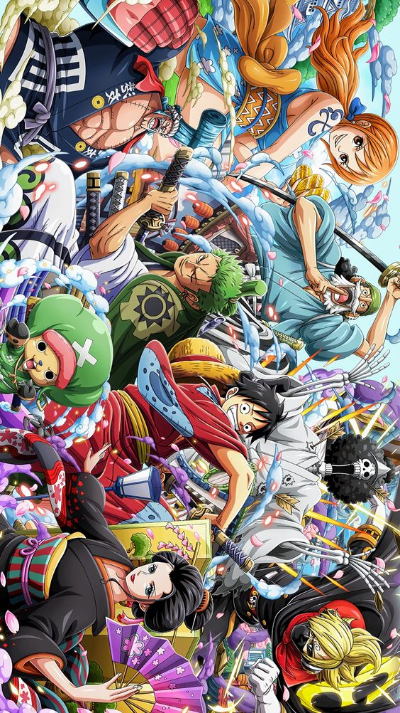
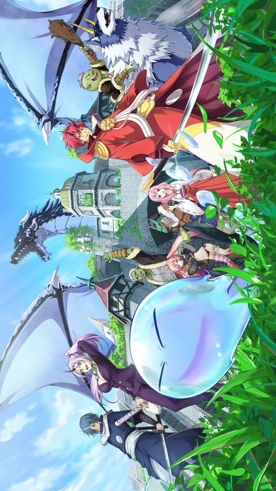
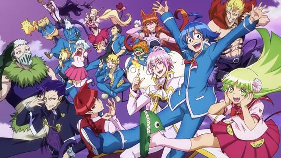

HOME
HÌNH ẢNH
KHÁM PHÁ
TRANG CHỦ

One Piece là bộ truyện tranh dành cho thiếu niên của tác giả nổi tiếng Oda Eiichiro. Bộ manga này được chuyển thể thành một series anime nhiều tập hài hước, đặc sắc.
Nhân viên văn phòng Satoru Mikami vô tình bị một tên cướp giết hại, lúc tỉnh lại đã thấy mình chuyển sinh vào thế giới khác lạ...
Mairimashita! Iruma-kun là câu chuyện kể về cậu bé Suzuki Iruma, người đã bị bố mẹ mình kí khế ước bán cho ác ma....